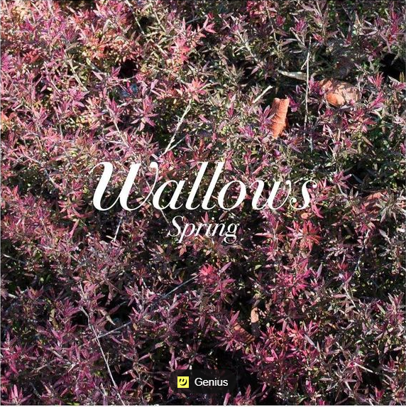

Arctic Monkeys' third album, "Humbug," shows the band's skilled songwriting and musicianship with unexpected musical turns and a darker tone. It reflects the band's established place in the UK pop firmament. The album's highlight, "Cornerstone," is beyond lovelorn with Alex Turner's swooning, dreamy vocals, while "Crying Lightning" is the loudest, most aggressive track.
 Credtis: Humbug by Arctic Monkeys
Credtis: Humbug by Arctic Monkeys
Arctic Monkeys' "AM" marks a departure from their earlier music, with sleeker, more self-lacerating lyrics and a blend of classic rock influences. Singer Alex Turner explores the limbo of sex and love, struggling to find meaning in a world of furtive flirts and bad decisions. Ultimately, the album reflects on the difficulty of finding genuine connection in a world consumed by personal branding.
Wallows has released their debut EP, Spring, after the success of their first single, Pleaser. The album features a mix of nostalgic and sarcastic 1980s Horror Film to heavy hitting Pictures of Girls, with a more relaxed tone overall. The EP's opening song, Ground, is a laid-back tune, while It's Only Right is a surf-rock inspired track with an interesting tempo switch. The highly anticipated 1980s Horror Film is Wallows' only true acoustic song.
 Credits: Spring by WallowsHozier's debut self-titled album, "Hozier," showcases his powerful, soulful voice and thoughtful lyrics. The album's breakout hit, "Take Me to Church," is a passionate and emotional commentary on religion and sexuality. Other standout tracks include the hauntingly beautiful "From Eden," the gospel-influenced "Angel of Small Death and the Codeine Scene," and the upbeat "Jackie and Wilson."